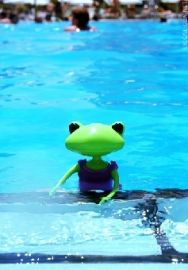
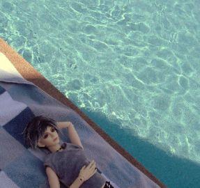
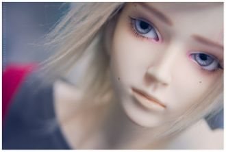
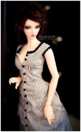
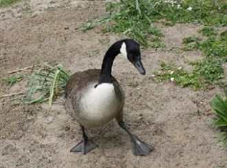

Freeing the flow of feelings Sergei Rachmaninoff creates "Here is well" ("Zdes' khorosho").
The big family came together to have a rest. Granny and grandpa visited their home today.
Her loveliness comes with talent,Her charity comes with smile.Her charm makes spectators gallant,She is a true queen of style.

Philharmonic and music schools go classical.
What is a love?May be a bird.Singer a songAt win over heart …
Mixed in my mind,Take in my heartaway…Again and again.

I was lostAnd I'm still lostBut I feel so much better
Piece by pieceI releaseOnce was mineNow undoneTurned blueLike New OrleansAnd went down likeA southern sun
I want I want to go to heavenI want I want to go to heaven
There's nothing more that I wantThan to touch youTo seek truthIn your eyesThe only thing that I wantIs to be with you
If I were youI would always love me soIf I were you
It might seem crazy what I'm about to saySunshine she's here, you can take a breakI'm a hot air balloon, I could go to space
She sees them walking in a straight line, that's not really her style.And they all got the same heartbeat, but hers is falling behind.
[Repeating chorus:]
Nanana
Nanana, nanana
Nanana...
Got my keys got my coat got my shoes onGot my phone got my bag got my nails onYou're here,you're here but I'm still aloneI say goodbye to your shadow
Boy, you got me stranded Feeling for you And I don't know what to do about it 'Cos you got me stranded Come on and help me through
Believe me, I just don’t careIf you look away or stare,If you choose to go or stayDon’t believe me, I pray!

Let's get awayNo need to worryMaking it realTrue storyWe're going to soar, way up to heavenNobody knows, what's gonna to happen
Shadows surround youWhere's the smile I long to see back on your faceWhat am I to doIn the end I only want to know you're safe

She was so young, only 17 years oldBut her magic dance shined brightly with Gold She made her majestic step to Marvelous Sky
Here I go out to sea againThe sunshine fills my hairAnd dreams hang in the airGulls in the sky and in my blue eyeYou know it feels unfair